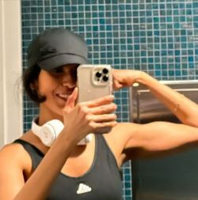
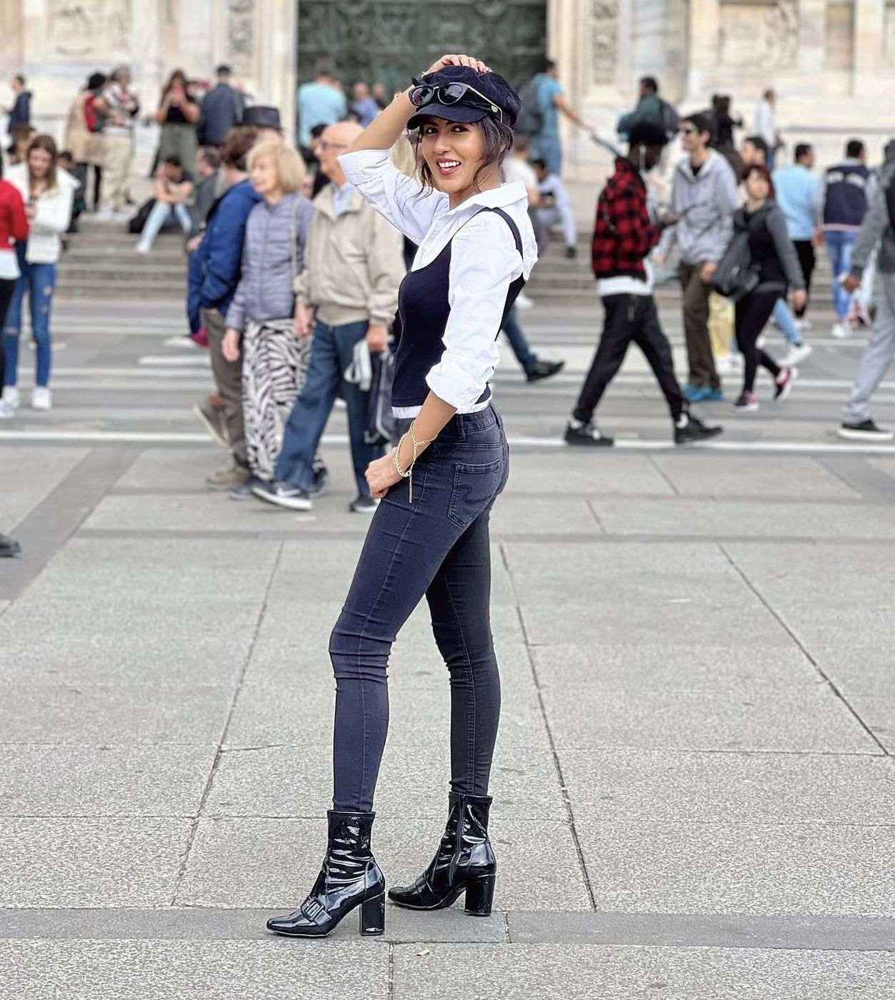
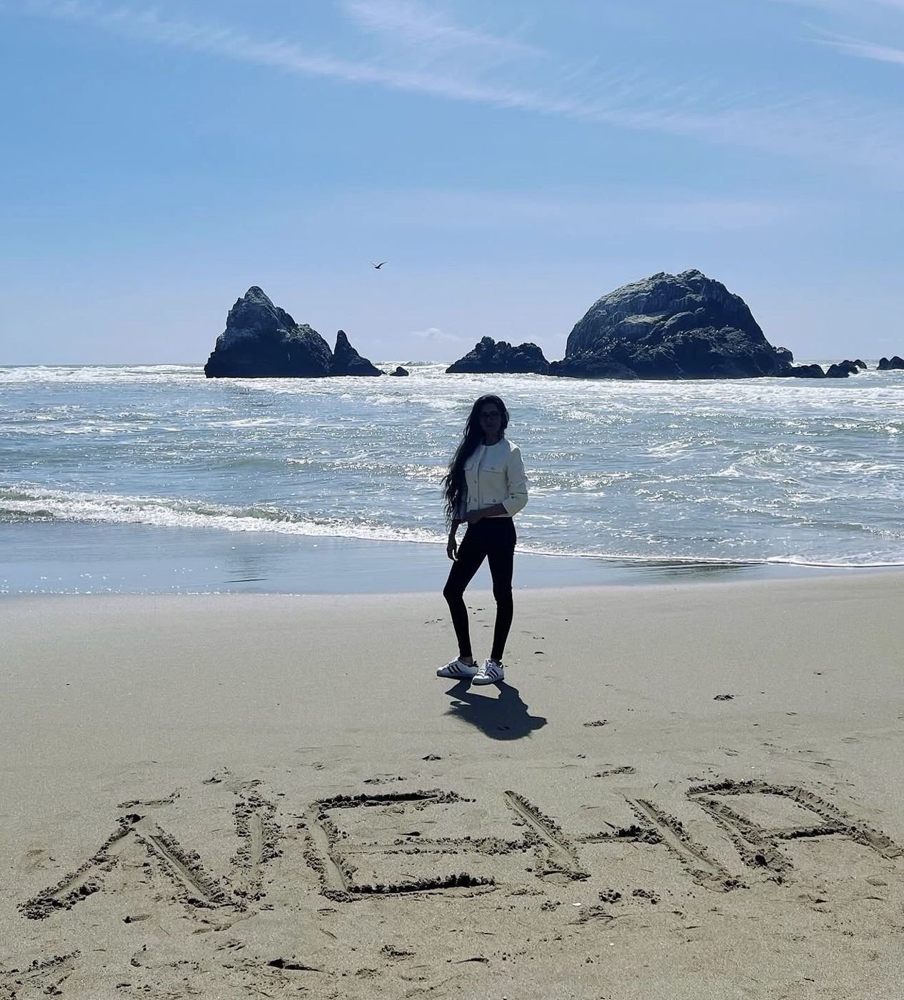

I never waited to feel ready. I started over, again and again, and each time it made me stronger.
Adventurous and bold. A Master's in Engineering, and I do things openly: I try them first, learn as I go, and start from scratch without fear.
India to Canada to the USA, alone, for school and work. Every move began from scratch, and I outgrow things fast, so I move on openly.
Europe. I booked it in two days and packed the same day. Landed in Venice with two bags, found a hotel nearby, looked up what to see, then took night trains and flights through Milan, Pisa and Rome in three days. All by myself.
Australia and Dubai. Dinner alone in the middle of a busy Friday night restaurant. Doing it alone is how I got comfortable in my own company.
Rubik's cube in 90 seconds, pottery, painting, dance, and a flash mob in front of 700 people. Now it's horses. I go all in on all of it, and I get good at it.


